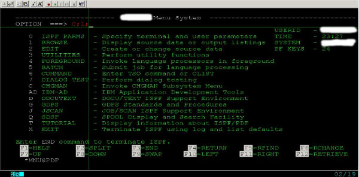
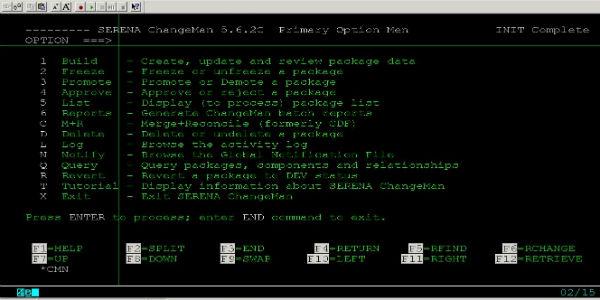

大机平台的版本控制工具Changeman
2010-10-30
在主机上面有好几个比较常见的版本控制工具，比如changeman和Endevor。我介绍下changeman。
ISPF面板上输入C;1

changeman的界面，这里装的版本是5.6.2c，

我介绍下各个常用选项
1.
用来新建，更新一个package的，你需要新建一个package来放置你的PL/I，COBOL程序和JCL等等
2.
将package freeze或unfreeze，在你觉得package里面的所有东西都测试得差不多了，可以准备上线安装之前，你要先freeze冻结掉这个package，然后等待相关项目管理人的approve，这样这个package才能被合法地安装。当然，如果你冻结了package之后，发现还有程序需要被修改什么的，这时候你可以反冻结(unfreeze)它，最好在package还没被approve之前。
3.
promote 或 demote。promote就是把你修改的程序版本提升到更高的level去。举个例子，一般PL/I或COBOL等写的程序在进入生产环境之前都会经过开发(Dev)——>系统集成测试(Sys)——>用户接收测试(UAT)——>生产环境(Prod)，promote就是可以把你的程序从较低的level提升到较高的level，慢慢接近prod，而demote反之就可以了。
4.
给项目管理人员用的，用来批准或拒绝你已经冻结(freeze)掉的package
5.
列出package，这个比较常用。比如你建了个package,在这个package里面改程序，下次登录的时候你只要把你的package ID在list里面输入就可以了。
Q.
很实用的一个功能。可以查到package,components，最重要的是它可以查到所有的components之间的依赖关系。比如你要查某个component的编译信息，你要查程序A都被那些Proc调用到，你要查Proc A都被哪些JCL调用到。
Query的菜单

先介绍到这里好了，给个印象.
Category: articles Tagged: z/OS